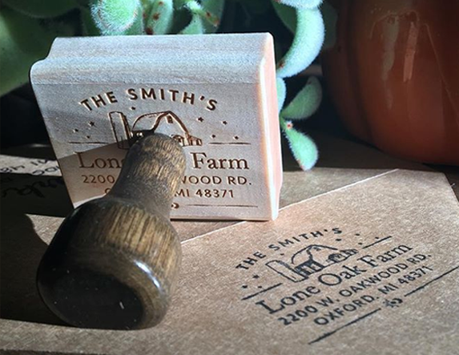
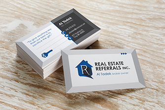
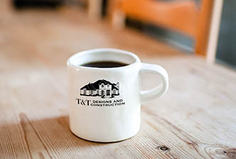
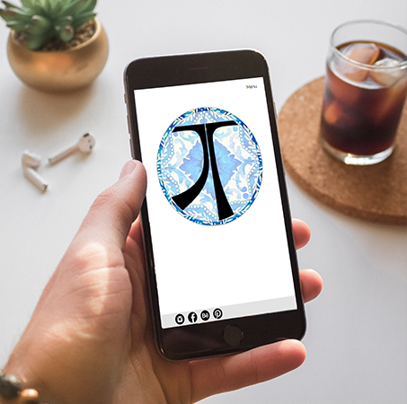
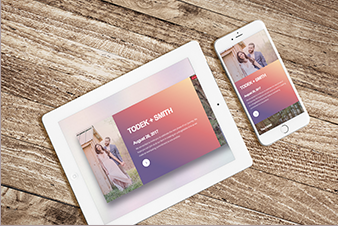
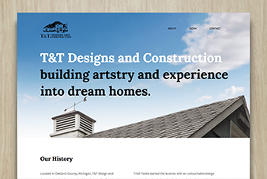

<!doctype html>
<html lang="en">
    <head>
        <meta charset="utf-8">
        <meta name="viewport" content="width=device-width, initial-scale=1.0">
        <title>Jamie Todek | Portfolio Site</title>
        <link rel="stylesheet" href="css/normalize.css">
        <link rel="stylesheet" href="css/main.css">
        <link href="https://fonts.googleapis.com/css?family=Averia+Serif+Libre" rel="stylesheet">
        <link href="https://fonts.googleapis.com/css?family=Sacramento" rel="stylesheet">
        <link href="https://fonts.googleapis.com/css?family=Lato:400,700" rel="stylesheet">
    </head>
    <body>
        <header>
            <div class="header-full">
                <div class="header-logo">
                    
                </div>
                <div class="header-navr">
                    <nav>
                      <ul>
                        <li><a href="#">Print</a></li>
                        <li><a href="#">Webdesign</a></li>
                        <li><a href="#">About</a></li>
                        <li><a href="#">Contact</a></li>
                        <li><a href="#">Quote</a></li>
                      </ul>
                    </nav>
                </div>
                <div class="header-text">
                    <h1>Jamie Todek</h1>
                    <h4>Designer. Developer. Dreamer.</h4>
                    <p>Skillfully merging the art of print communication<br>alongside hand-crafted web design.</p>
                    <a href="#">Learn More</a>
                </div>
            </div>
        </header>

        <main>
            <section id="skillset">
                <div class="skillset-icons">
                    <div class="icon-link"><a href="#"></a>Websites</div>
                    <div class="icon-link"><a href="#"></a>Branding</div>
                    <div class="icon-link"><a href="#"></a>Stationary</div>
                    <div class="icon-link"><a href="#"></a>Webstores</div>
                    <div class="icon-link"><a href="#"></a>Marketing</div>
                    <div class="icon-link"><a href="#"></a>Wordpress</div>
                </div>
                <div class="skillset-text">
                    <h3>my skillset</h3>
                    <p>For the past 12 years, my background<br>in printmaking and advertising has<br>evolved into communication design<br>with a focus on quality craftmanship,<br>succesful client relations and<br>a mastery of technical skills.</p>
                </div>
            </section>

            <section id="print">
                <div class="print-text">
                    <h2>Print Design</h2>
                    <p class="emphasize">Tell your story.<br>Leave your mark.<br>Create your future.</p>
                    <p>Paper &amp; printed materials<br>communicate while<br>encouraging social<br>interaction and the return<br>of happy customers.</p>
                    <a href="#">Print Portfolio</a>
                </div>
                <div class="print-images">
                    <a href="#" id="lg-img-print"></a>
                    <a href="#" id="sm-img-top"></a>
                    <a href="#" id="sm-img-btm"></a>
                </div>
            </section>

            <section id="web">
                <div class="web-images">
                    <a href="#" id="lg-img-web"></a>
                    <a href="#" id="sm-img-top-web"></a>
                    <a href="#" id="sm-img-btm-web"></a>
                </div>
                <div class="web-text">
                    <h2>Web Design</h2>
                    <p class="emphasize">Build your online pressence.<br>Expand your repitoure.<br>Reach extended audiences.</p>
                    <p>Beautiful and immersive webstores,<br>user-centered wordpress sites and<br>design-oriented responsive web pages<br>bring unlimited growth opportunties<br>to indivduals and small businessness.<p>
                    <a href="#">Web Portfolio</a>
                </div>
            </section>

            <section id="quote">
                <div class="quote-full">
                    <h2>Let's Grow</h2>
                    <p>Inspired and ready to turn  your own dream design into reality?<br>Let’s plant the seed of conversation about your next big design idea or<br>web project and find out how I can help your business grow.</p>
                    <a href="#">Get a quote</a>
                </div>
            </section>

            <footer>
                <div class="footer-icons">
                    <a href="http://www.behance.com/jtodek" target="new"></a>
                    <a href="http://www.facebook.com/jtodekdesign" target="new"></a>
                    <a href="http://www.instagram.com/jtodek" target="new"></a>
                </div>
                <div class="footer-text">
                    <p>Designed &amp; developed by Jamie Todek</p>
                </div>
            </footer>
        </main>
    </body>
</html>
